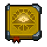
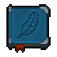
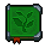
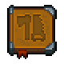
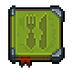

Technologies
Technology points
Technology is unlocked by three types of technology points. These points are obtained by different actions, as well as items and study of items. Essential to progress are the study table in the church basement and the science and faith points that are used to study items. Eating cake or Grape pie gives the player a temporary buff that provide a flat +1 blue points to any research.
 Red
Red
"Hand-crafting skills, and your ability to work with materials". Anything involving physical labor generates  points. Actions include operating machines in the farm, cutting down trees, and mining stone and coal.
points. Actions include operating machines in the farm, cutting down trees, and mining stone and coal.
 Green
Green
"Knowledge about the nature of things, and of nature itself". Anything involving organic materials generates green points. This means cutting down weeds, gathering wood and farming.
 Blue
Blue
"Spiritual knowledge of the immaterial world". Blue tech points are often among the hardest to earn in the early game. Tasks involving the morgue, graveyard, writing and alchemy often generate them but many of these aren't options until later. The best early source of them is the study table. Organs are studied to gain  as well as gravestones, fences and some alchemical substances. The study table is unlocked after the player gets access to the church.
as well as gravestones, fences and some alchemical substances. The study table is unlocked after the player gets access to the church.
Another way to gain those points is producing hemp ropes, polished stone bricks, steel parts, conical flasks or advanced conical flasks. Each one of these items provides  1 when crafted.
1 when crafted.
Some players claim that the ultimate way to gain them is buying or producing blue techbooks, which provide  25 or 50.
25 or 50.
Another viable way is to exchange 2×
A piece of stone into 5  points by crafting 1×
points by crafting 1×
Stone grave fence. Afterwards it could be recycled into 1×
A piece of stone. This is time-consuming, but a rather cheap way to obtain  tech points, especially after having setup a working
tech points, especially after having setup a working
Zombie stone quarry.
Even without that tech, however, any zombie can be assigned to a yard workstation. Two zombies on two cheap, type I Stone Cutters, with one cued up building many dozens of Stone Grave Fences, and another cued up many dozens of breaking them down into stone (and a trunk with enough space for these) would keep running quite a while, during which one can run about gathering stone to feed their Blue Tech Point Factory operation. (NOTE: This will not work in current game with all DLC's, as items no longer drop tech points when crafted by Zombies. One can still focus on breaking the fences down into stone while the player does the fence-making personally, though. It is unclear if this changed due to base game updates or if it was an effect of one of the DLC's- more data needed. With the Better Save Souls expansion, one can use Soul Gratitude to run the crafting stations and still get the tech points as if one made the items themselves, but it will probably take longer to unlock that ability than it does for Zombie labor.)
See also: Blue Techpoint Checklist
Study table
Once you progress through the main quest to unlock the church and give sermons or upon clearing debris in the tunnels under your home, you unlock the study table. It can be found beneath the church in the alchemy lab.
The study table is used to study items. After an item has been studied it cannot be studied again and you will obtain both technology points as well as possible decomposition products. Organic materials tend to generate  points, inorganic materials (iron, stone, tools) generate
points, inorganic materials (iron, stone, tools) generate  points, and mortuary, graveyard, and alchemy items generate
points, and mortuary, graveyard, and alchemy items generate  points. What an item provides when studied is seen next to the "Study Not Complete" text when hovering over an item.
points. What an item provides when studied is seen next to the "Study Not Complete" text when hovering over an item.
Studying most items requires
faith (except most alchemy items) and
science.
faith can be obtained by holding sermons in the church on  or from a confessional.
or from a confessional.
Science can be obtained by decomposing paper, notes, chapters, lenses, or books on the study table.
Books
The astrologer sells books and great books, that can be used to instantly gain 25 (standard) or 50 (great) techpoints of one of three colours. Those books can also be crafted by  zombies on the random text generator.
zombies on the random text generator.
-
standard variant
-
great variant


Technology Tree
The technology tree is sorted by related technology branches.
Anatomy and Alchemy
| Anatomy and Alchemy tree deals with autopsies and acquired organs. Alchemy is unlocked upon speaking to the old woman in the swamp. As you unlock items along this branch, you gain access to better autopsy resources and techniques, alchemical equipment, and products. |
Theology
 |
Theology deals with the church and graveyard. It unlocks better gravestones and fences to increase graveyard rating |

Book Writing
 |
Book Writing deals with the production of knowledge and science. The early stages of the tree involve paper making and ink but later levels change how you can use stories to create more complex written resources for use in top-tier sermons and crafting. |
Farming and Nature
 |
Farming and Nature deals with farming and the manipulation of nature. This involves growing crops, fruit trees, beekeeping, wine and beer production, and fishing. |
Smithing
| The Smithing tree deals with the processing of iron and sand into metal parts, tools, and glass. |
Building
 |
Building deals with processing of wood and stone into wooden and stone products. |
Cookery
 |
Cookery deals with the preparation of various food items. |
Spiritualism
| Spiritualism deals with the purification of souls. |